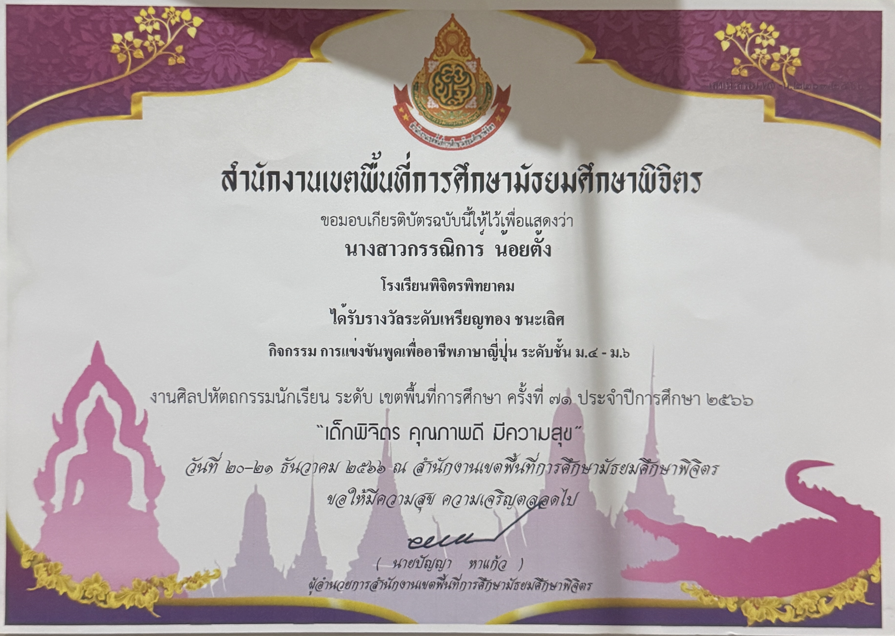
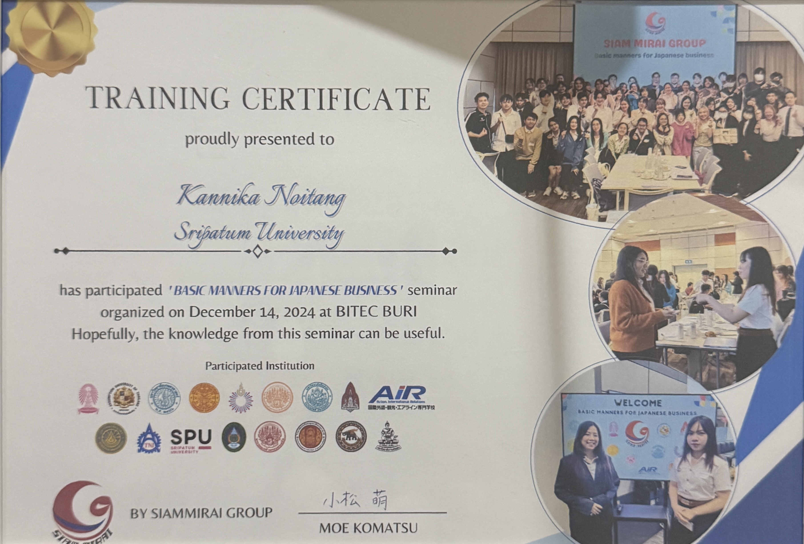
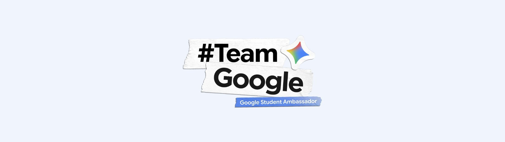

นักศึกษาคณะเทคโนโลยีสารสนเทศ สาขาวิชาวิทยาการคอมพิวเตอร์และนวัตกรรมการพัฒนาซอฟต์แวร์ มหาวิทยาลัยศรีปทุม มุ่งมั่นพัฒนาทักษะด้านเทคโนโลยี การพัฒนาซอฟต์แวร์ และการเข้าร่วมกิจกรรมเพื่อเปิดรับประสบการณ์ใหม่ๆ
Education Background
คณะเทคโนโลยีสารสนเทศ | ปัจจุบัน
ศึกษาการพัฒนาซอฟต์แวร์ นวัตกรรมดิจิทัล การเขียนโปรแกรม และการพัฒนาระบบเทคโนโลยีสารสนเทศ
มัธยมศึกษาตอนปลาย แผนการเรียนศิลป์-ภาษาญี่ปุ่น (สำเร็จการศึกษา)
ปูพื้นฐานทักษะภาษาและวัฒนธรรมญี่ปุ่น พร้อมเป็นตัวแทนเข้าร่วมการแข่งขันพูดเพื่ออาชีพภาษาญี่ปุ่น ได้รับรางวัลชนะเลิศระดับเหรียญทอง[cite: 2]
ปูพื้นฐานทักษะภาษาและวัฒนธรรมญี่ปุ่น พร้อมเป็นตัวแทนเข้าร่วมการแข่งขันพูดเพื่ออาชีพภาษาญี่ปุ่น ได้รับรางวัลชนะเลิศระดับเหรียญทอง งานศิลปหัตถกรรมนักเรียน ระดับเขตพื้นที่การศึกษา ครั้งที่ 71
Experience, Activities & Training
การแข่งขันพูดเพื่ออาชีพภาษาญี่ปุ่น (ม.4 - ม.6)
งานศิลปหัตถกรรมนักเรียน ระดับเขตพื้นที่การศึกษา ครั้งที่ 71 โดย สพม.พิจิตร ฝึกฝนทักษะการสื่อสารภาษาต่างประเทศ และการพูดต่อหน้าสาธารณชน
ตัวแทนนักศึกษาในการเรียนรู้และถ่ายทอดเทคโนโลยี เครื่องมือ และนวัตกรรมจาก Google สู่ชุมชนนักศึกษาภายในมหาวิทยาลัย
จัดโดย Siam Mirai Group ณ BITEC BURI ผ่านการอบรมมารยาทการติดต่อสื่อสารและการทำงานร่วมกับองค์กรธุรกิจญี่ปุ่น
Certifications & Credentials

การแข่งขันพูดเพื่ออาชีพภาษาญี่ปุ่น (ม.4 - ม.6)
งานศิลปหัตถกรรมนักเรียน ระดับเขตพื้นที่การศึกษา ครั้งที่ 71 (โรงเรียนพิจิตรพิทยาคม, ธันวาคม 2566)

การอบรมสัมมารยาทและการสื่อสารธุรกิจญี่ปุ่น
จัดโดย Siam Mirai Group ณ BITEC BURI (14 ธันวาคม 2024)

สมาชิกรุ่นที่ 2 ประจำปี 2026
ตัวแทนส่งเสริมการเรียนรู้เทคโนโลยีและเครื่องมือจาก Google ภายในมหาวิทยาลัย